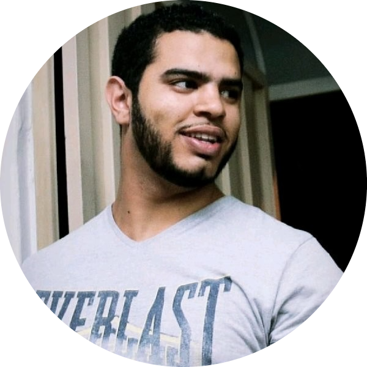

|  |
Bruno RodrigoSenior Software Develop Engineer in Test at Defined Crowd. Positive, engaging, and with solid experience in the field of Software Testing. I am always a learner who strongly believes we should always create exceptional experiences every day. Nowadays, I'm responsible for developing test automation at a multi-disciplinary team that involves the disciplines of Software Engineering and Data Science, in the development of solutions in the areas of Learn to Rank and Data Engineering. I enjoy being technical and I rather automate tasks all things that are possible and also those that seem impossible. Researching new ways, new tools, and new approaches are the things that drive my work and my life. I love to learn and share knowledge in teams and presentations. Contact info: Linkedin |
| Python | Javascript | Typescript | Java | Kotlin | Swift | SQL | Dart | COBOL |
| Android Espresso(Android) | XCTest and XCUITest (iOS) | Pytest | Selenium | TestNG | JUnit | Playwright |
| Kubernetes | Docker | Sonarqube | Jenkins | Git | Kafka | Cassandra | Maven | Jira |
| Scrum | Kanban | XP |
| Date | Company | Work | Locale |
|---|---|---|---|
| Jul 2022 | Defined Ai | Senior Software Developer Engineer in Test (SDET) | Porto, Portugal |
| Nov 2019 - Jul 2022 | Farfetch | Senior Software Developer Engineer in Test (SDET) | Porto, Portugal |
| Oct 2017 - Nov 2019 | Dextra Digital | Software QA Engineer | Campinas, São Paulo, Brazil |
| Mar 2016 - Sep 2017 | HST | QA Analyst | Campinas, São Paulo, Brazil |
| Nov 2014 - Dec 2015 | Matera Systems | PL/SQL Developer | Campinas, São Paulo, Brazil |
| Jan 2014 - Nov 2014 | Asasul IT Solutions | Support Analyst | Hortolândia, São Paulo, Brazil |
| May 2013 - Jan 2014 | Stefanini Group | Software Developer - Internship | Jaguariúna, São Paulo, Brazil |